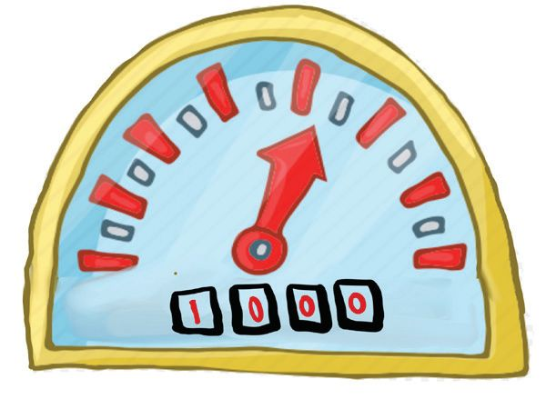
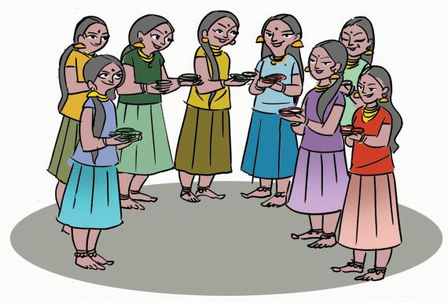
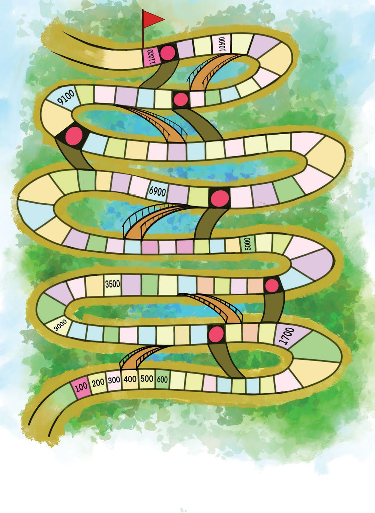

ഭ
കണ്ണവ-ട-∏-ഗ്ലൺ ഓണാവ-ധിത്ഥ് രാജുവും അബുവും ജോണിയും ചേയ്യന്ന് പഗ്ലൺ കെന്തി കണ്ണവടം തുടത്മി.
ഇ∏ോƒ 18 രൂപ മിണ്ണമു-≠്.
നമുത്ഥ് തുല്യമായി വീതിത്ഥാം
ഒരാƒത്ഥ് എത്ര രൂപ ലഭിത്ഥും? 3 പേയ്യത്ഥ് തുല്യമായി വീതിത്ഥണം.
103


ഭ
കണ്ണവ-ട-∏-ഗ്ലൺ ഓണാവ-ധിത്ഥ് രാജുവും അബുവും ജോണിയും ചേയ്യന്ന് പഗ്ലൺ കെന്തി കണ്ണവടം തുടത്മി.
ഇ∏ോƒ 18 രൂപ മിണ്ണമു-≠്.
നമുത്ഥ് തുല്യമായി വീതിത്ഥാം
ഒരാƒത്ഥ് എത്ര രൂപ ലഭിത്ഥും? 3 പേയ്യത്ഥ് തുല്യമായി വീതിത്ഥണം.
103


ആദ്യം 3 പേരും ഒരു രൂപ വീതം എടുത്താൽ ബാക്കി വീണ്ടും അവർ 1 രൂപ വീതം എടുത്താൽ ബാക്കി പിന്നെയും ഒരു രൂപ വീതം എടുത്താൽ ബാക്കി ഈ രീതി തുടർന്നാൽ
18 − 3 = 15 15 − 3 = 12 12 − 3 =
9
9 − 3 =
6
6 − 3 =
3
3 − 3 =
0
ഒരോരുത്തരും എത്ര തവണ 1 രൂപ എടുത്തു? ഒരാൾക്ക് ആകെ കിട്ടിയത്
രൂപ.
ഇതിനെ ഒന്ന്കൂടി വിശദ-മാക്കാം.
രൂപ
18
15
12
9
6
3
18 − 3 = 15
15 − 3 = 12
12 − 3 = 9
9−3= 6
6−3= 3
3−3= 0
പേര്
ഓരോരുത്തർക്കും കിട്ടിയത്
രാജു അബു ജോണി ഓരോ തവണയും ബാക്കി
18 രൂപ 3 പേർക്ക് തുല്യമായി വീതിച്ച-
പ്പോൾ ഒരാൾക്ക് കിട്ടിയത് രൂപ. അതായ-ത്, 18 ÷ 3 =
104
ക്രിയാരൂപം
ആറ്കൾ ചേർന്നാൽ ആണല്ലോ.
3
6 3 18 18 0
18


രണ്ടാം ദിവസം 21 രൂപ മിച്ചം വന്നു. ഇത് തുല്യമായി വീതിച്ചാൽ ഒരാൾക്ക് കിട്ടുന്നത് എങ്ങനെ കണ്ടുപിടിക്കും? 21 − 3 = 18
ൽ നിന്നും എത്ര തവണ 3 എടുക്കാം? ഇതേ രീതി തുടർന്നാൽ ഒരാൾക്ക് കിട്ടുന്നത് എത്രയായിരിക്കും? ഇതിനെ 21 ÷ 3 = എന്നെഴുതാം. 21
18 − 3 = 15 ......................... ......................... .........................
7 3 21 21 0
ക്രിയാരൂപം
മൂന്നാം ദിവസം 27 രൂപ മിച്ചം വന്നു. ഇത് തുല്യമായി വീതിച്ചാൽ ഒരാൾക്ക് കിട്ടുന്നത് ÷
കലോത്സവം
= 3 27
രാജുവും അബുവും ജോണിയും ഓണാവ-ധിക്ക് ശേഷം സ്കൂളിലെത്തി.
നന്ദപുരം എൽ.-പി.സ്കൂൾ
അറിയിപ്പ്
നോട്ടീസ് ബോർഡ്
ഈ വർഷത്തെ സ്കൂൾ കലോത്സവം നവംബർ അവസാന-വാരത്തിലാണ്. ഇതിന്റെ ഭാഗമായി ഓരോ ക്ലാസിലേയും കുട്ടികളെ രാഗം, താളം, ലയം, ശ്രുതി എന്നീ ഹൗസുക-ളായി തിരിച്ച് മത്സര പരിപാടികൾ നടത്തുന്നതാണ്. നന്ദപുരം ഹെഡ്മാസ്റ്റർ
ഒപ്പ്/-
105


കലോത്സവ-ത്തെക്കുറിച്ചുള്ള നോട്ടീസ് ശ്രദ്ധിച്ചല്ലോ. കുട്ടിക-ളുടെ എണ്ണം സൂചിപ്പിക്കുന്ന പട്ടിക കണ്ടില്ലേ? ക ഓരോ ക്ലാസിലെയും കുട്ടികളെ കക നാല് ഹൗസുക-ളിലേക്ക് തുല്യമായി ഉൾപ്പെടുത്തണം. ഓരോ കകക ക്ലാസിൽനിന്നും എത്ര പേരെ കഢ വീതമാണ് ഓരോ ഹൗസിലും ഉൾപ്പെടുത്തേണ്ടത്? ഒന്നാംക്ലാസിലെ 24 കുട്ടികളെ 4 ഹൗസുകളിലാക്കിയാലോ? ക്ലാസ്
4
കുട്ടിക-ളുടെ എണ്ണം
24 32 36 28
കുട്ടികളെ ഹൗസുക-ളിലേക്ക് മാറ്റുമ്പോൾ
24 − 4 = 20
ബാക്കി വരുന്നവർ അടുത്ത 4 കുട്ടികളെ ഹൗസുക-ളിലേക്ക് മാറ്റുമ്പോൾ ബാക്കി വരുന്നവർ ഈ രീതി- തുടർന്നാൽ
ഇപ്പോൾ ഓരോ ഹൗസിലെയും കുട്ടിക-ളുടെ എണ്ണം അതായത്, 24 ÷ 4 = ക്രിയാരൂപം
6 4 24 24 0
ÿ
20 − 4 12 − 4 8−4 4−4
= 16 = 8 = 4 = 0
ചേർന്ന-ആറുകൾ താ-. ണല്ലോ 4
24 4 ണ്മ 6 = 24
$ രണ്ടാം ക്ലാസിലെ 32 കുട്ടികളെ ഇതുപോല 4 ഹൗസുക-ളിലാക്കിയാൽ ഓരോ ഹൗസിലെയും കുട്ടിക-ളുടെ എണ്ണം 32 ÷ 4 = 4 32
$ മൂന്നാം ക്ലാസിലെ കുട്ടികളെ ഹൗസുക-ളിലാക്കിയാൽ
÷
=
÷
=
4 36
$ നാലാംക്ലാസിലെകുട്ടികളെ ഹൗസുക-ളിലാക്കിയാൽ 4 28
106



തിരുവാതിര മ'രം 8 നെ 6 കൊ≠് ഗുണിണ്ണതാണ√ോ 48
തിരുവാതിര-ത്ഥളി മ'-രസ്ഥിനായി കുന്തികƒ 48 രൂപയ്ത്ഥ് വളകƒ വാത്മി. മ'-രസ്ഥിൺ പന്നെടുത്ഥുന്ന 8 കുന്തികƒ വളയുടെ വില തുല്യമായി എടുസ്ഥാൺ ഒരു കുന്തിത്ഥ് എത്ര രൂപ ചെലവാകും? ഒരു കുന്തിത്ഥ് ചെലവാകുന്നത്
48 ÷
=
സംഘനൃസ്ഥം സുഹറയും കൂന്തു- ക ആരും സംഘ നൃസ്ഥം അവത-രി-∏ിത്ഥുന്നതിനായി വളകƒ വാത്മി. 10 വളകƒ വീതമു≈ 4 പാത്ഥ‰ും, പാത്ഥ- ‰ ഇൺ അ√ാസ്ഥ 8 വളക-ളുമാണ് അവയ്യത്ഥ് കിന്തിയ-ത്. 4 പേയ്യത്ഥ് ഈ വളകƒ തുല്യമായി വീതിത്ഥണം. ഒരു കുന്തിത്ഥ് എത്ര വളകƒ കിന്തും?
എഗ്ലാണ് ബ'ം?
$
എത്മനെ ക≠െസ്ഥാം?
100 ണ്മ 15 = 1500 ആണ-√ോ.
$
4 പാത്ഥ‰് തുല്യമായി 4 പേയ്യ എടുസ്ഥാൺ
50 ണ്മ 15 = ..........
50 ണ്മ 30 = ..........
ഒരു കുന്തിത്ഥ് കിന്തുന്ന വളക-ളുടെ എവ്വം
25 ണ്മ 15 = ..........
25 ണ്മ 30 = ..........
75 ണ്മ 15 = ..........
75 ണ്മ 30 = ..........
$
8 വളകƒ 4 പേയ്യ തുല്യമായി എടുസ്ഥാൺ
ഒരു കുന്തിത്ഥ് കിന്തുന്നത് ഒരു കുന്തിത്ഥ് ആകെ കിന്തുന്ന വളക-ളുടെ എവ്വം ............. + ............. = ........
107

ഇവിടെ 48 വളകൾ 4 കുട്ടികൾക്ക് തുല്യമായി വീതിച്ചപ്പോൾ ഒരു കുട്ടിക്ക് കിട്ടിയത് 48 ÷ 4 = 12 4 48
=
4
10 + 2 40 + 8 40
ക്രിയാരൂപം
4
=
12 48 40 8
0+8
8
8
0
0
10 വളക-ളുടെ 5 പാക്കറ്റും രണ്ട് വളക-ളുമാണ് ഉള്ളതെങ്കിൽ എങ്ങനെ
പേർക്ക് തുല്യമായി വീതിക്കാം? ഒരോ കുട്ടിക്കും ഒരു പാക്കറ്റു വീതം കൊടുത്താൽ ഒരു കുട്ടിക്ക് കിട്ടുന്ന വളക-ളുടെ എണ്ണം ഇനി 10 ന്റെ ഒരു പാക്കറ്റും 2 എണ്ണവും ബാക്കിയുണ്ടല്ലോ. അപ്പോൾ ബാക്കിയുള്ള വളക-ളുടെ ആകെ എണ്ണം . ഇത് 4 പേർക്ക് തുല്യമായി വീതിച്ചാൽ ഒരാൾക്ക് കിട്ടുന്നത് . ഇപ്പോൾ ഒരു കുട്ടിക്ക് ആകെ കിട്ടുന്നത് ............. + ............. = ........ 4
ഈ ക്രിയ ഇങ്ങനെ എഴുതാം.
ന്റെ പാക്കറ്റ്
ഒന്ന്കൾ
5 4
2
1
2
ഒരു 10 ന്റെ പാക്കറ്റിലെ വളകളും 2 വളകളും ചേർന്നാൽ
12
ഇത് 4 പേർ തുല്യമായി എടുത്താൽ 4 ണ്മ 3 =
12
10
കുട്ടിക-ളുടെ എണ്ണം 4 4 പേർ ഒരു പാക്കറ്റുവീതം എടുത്താൽ 4 ണ്മ 1 = ബാക്കി →
ബാക്കി →
108
0


10 + 3 4 40 + 12
13 4 52
40
4
0 + 12
ക്രിയാരൂപം
12
12
12
0
0
72 നെ√ിത്ഥ 6 പേയ്യത്ഥ് തുല്യമായി നൺകി-
യാൺ ഒരാƒത്ഥ് എത്ര നെ√ിത്ഥ കിന്തും? 75 ലി‰യ്യ പാൺ 5 ലി‰യ്യ വീതം കൊ≈ുന്ന പാത്ര- ത്മ - ള ഇ- ല ആ- ത്ഥ ആ≥ എത്ര പാത്ര- ത്മ ƒ വേ≠ി വരും?
ഇരന്തി 24 ÷ 3 = 8
24 ÷ 6 =
48 ÷= 3
12 ÷ 6 =
48 ÷= 6
12 ÷ 12 =
ചോത്ഥ് നിയ്യമാണം നാലാം ക്ലാസിലെ കുന്തികƒ പ്രവൃസ്ഥി പരിചയമേളയുടെ ഭാഗമായി 484 ചോത്ഥുകƒ ഉ≠ാത്ഥി-. 100 ‚െ 4 പാത്ഥ-‰ുകളും 10 ‚െ 8 പാത്ഥ-‰ുകളും പാത്ഥ-‰ി-√ാതെ 4 എവ്വവുമായാണ് ചോത്ഥുകƒ ഉ≈-ത്. ഇവ 4 ക്ലാസുകളി- ഏലത്ഥ് തുല്യ- മ ആയി വീതി- ണ്ണ ആൺ ഓരോ ക്ലാസിനും എത്ര ചോത്ഥുകƒ വീതം കിന്തും? എത്മനെ വീതിത്ഥാം? $
ആദ്യം 100 ‚െ പാത്ഥ-‰ുകƒ വീതിണ്ണാൺ ഓരോ ക്ലാസിനും കിന്തുന്ന 100 ‚െ പാത്ഥ-‰ുകƒ
1
എവ്വം
പസ്ഥി‚െ പാത്ഥ-‰ുകƒ വീതിത്ഥുബ്ബോƒ ഖഠ 495-3/ങമവേ-െ4(ങ) ഢീഹ-2
ഓരോ ക്ലാസിനും കിന്തുന്നത് $
2
എവ്വം
പാത്ഥ-‰ില-√ാസ്ഥത് 4 എവ്വം ഉ≠√ോ അത് വീതിണ്ണാലോ, ഓരോ ക്ലാസിനും കിന്തുന്നത്
എവ്വം
ഹരിത്ഥാതെ ക≠െസ്ഥാം 72 ÷ 4 = 18 76 ÷ 4 = 68 ÷ 4 = 64 ÷ 4 = 80 ÷ 4 =
109

ഒരു ക്ലാസിന് കിന്തുന്ന ആകെ ചോത്ഥുകƒ 100 ‚െ 1 പാത്ഥ‰ും 10 ‚െ 2 പാത്ഥ‰ും 1 എവ്വവും
അതായത് 100 + 20 + 1 =
എവ്വം
ആകെ വീതിത്ഥേ≠ ചോത്ഥുകƒ 484 ആണ√ോ ഓരോ ക്ലാസിനും കിന്തിയ ചോത്ഥുക-ളുടെ എവ്വം 100 ‚െ പാത്ഥ-‰ു 10 ‚െ പാത്ഥ-‰ു
കളുടെ എവ്വം
4 ക്ലാസുകƒത്ഥും
തുല്യമായി വീതിണ്ണാൺ ഒരു ക്ലാസിന് കിന്തുന്നത് 100 4 400 400 0
+ + + +
20 + 1 80 + 4 80 80 0 + 4 4 0
പാത്ഥ-‰ിൺ അ√ാ ആകെ കളുടെ എവ്വം സ്ഥവയുടെ എവ്വം
4
8
4
484
1
2
1
121
121 4 484 400 84 80 4 4 0
ക്രിയാരൂപം
121 4 484 4 08 8 04 4 0
ഇവിടെ 484 നെ ഹാര്യം എന്നും 4 നെ ഹാരകം എന്നും 121 നെ ഹരണ-ഫലം എന്നും പറയുന്നു. റീജയും നാല് കൂന്തുകാരും ചേയ്യന്ന് മാലകോയ്യത്ഥുന്നതിനായി മുസ്ഥുകƒ വാത്മി. മുസ്ഥുകƒ 100 എവ്വം വീതമു-≈തും 10 എവ്വം വീതമു-≈-തുമായ പാത്ഥ-‰ുകളിലാണ്. 100 ‚െ പാത്ഥ-‰ുകളും 10 ‚െ പാത്ഥ-‰ുകളും 6 എവ്വം വീതം വാത്മി. ഇവ എത്മനെ 5 പേയ്യത്ഥ് തുല്യമായി വീതിത്ഥും? 5 പേയ്യത്ഥ് ആദ്യം 100 ‚െ 6 പാത്ഥ-‰ുകƒ വീതിണ്ണാൺ
ഒരു കുന്തിത്ഥ് കിന്തുന്ന നൂറി‚െ പാത്ഥ-‰ുകƒ ബാത്ഥി വരുന്ന നൂറി‚െ പാത്ഥ‰്
110
എവ്വം എവ്വം

ഈ 100 ന്റെ പാക്കറ്റിനെ 10 എണ്ണം വീതമുള്ള 10 പാക്കറ്റുക-ളാക്കാമല്ലോ. ഇപ്പോൾ 10 ന്റെ പാക്കറ്റുക-ളുട ആകെ എണ്ണം
10 + 6 =
5 പേർക്ക് 16 പാക്കറ്റുകൾ വീതിച്ചാൽ പാക്കറ്റ്.
ഒരു കുട്ടിക്ക് കിട്ടുന്നത് ബാക്കി വരുന്ന 10 ന്റെ പാക്കറ്റ്
5 പേർക്ക് ബാക്കി വന്ന പാക്കറ്റിലെ 10 മുത്തുകൾ തുല്യമായി വീതിച്ചാൽ ഒരു കുട്ടിക്ക് കിട്ടുന്നത്
എണ്ണം.
ഒരു കുട്ടിക്ക് ആകെ കിട്ടുന്നത് 100 ന്റെ ഒരു പാക്കറ്റും 10 ന്റെ 3 പാക്കറ്റും
2 എണ്ണവുമാണ-ല്ലോ.
എണ്ണം
അതായത് 100 + 30 + 2 =
660 ÷ 5 = 132
100 + 30 + 2 5
5 600 + 60 500 100 + 60 = 160 150 10 10 0
132 5 660 5
660 500 160 150
ക്രിയാരൂപം
16 15
10 10
10 10
0
0
വാണിപുരം എൽ.-പി. സ്കൂളിൽ ഉച്ചഭ-ക്ഷണ-ത്തിനായി ഒരു ദിവസം 6 കിലോഗ്രാം പയറാണ് ഉപയോഗിക്കുന്നത്. 135 കിലോഗ്രാം പയറാണ് കഴിഞ്ഞ ദിവസം സ്കൂളിലേക്ക് വാങ്ങിയ-ത്. ഇത് എത്ര ദിവസ-ത്തേക്ക് തികയു-ം? $
ഇവിടെ 135 നെ 6 കൊണ്ട് ഹരിക്കണ-മല്ലോ. ഹരിച്ചു നോക്കൂ. പയർ 22 ദിവസം ഉപയോഗിക്കാമ-ല്ലോ. എത്ര കിലോഗ്രാം പയർ ബാക്കിയുണ്ട്? കിലോഗ്രാം.
22 6
135 12
ഹരിക്കുമ്പോൾ ബാക്കിയുള്ളതിനെ ശിഷ്ടം എന്ന് പറയുന്നു.
15 12 3
111

624 നെ എത്മനെ 6 തുല്യഭാഗ-ത്മളാത്ഥാം. 624 = 600 + 20 + 4 600 നെ 6 തുല്യ- കൂന്തത്മളാത്ഥി വീതി--ണ്ണാൺ. ഒരാƒത്ഥ് കിന്തുന്നത് എത്രയാ-
യിരിത്ഥും? 100. അതായ-ത്, 600 ÷ 6 = 100 ഇനി എത്ര ബാത്ഥി? 24 24 നെ 6 തുല്യഭാഗ-മാത്ഥിയാൺ 24 ÷ 6 = 4 അ∏ോƒ, 624 ÷ 6 = (600 ÷ 6) + (24 ÷ 6) = 104 104 100 + 4 6 600 + 24 600 24 24 0
6 ക്രിയാരൂപം
624 6
ഹാരകവും ഹരണ-ഫലവും തΩിൺ ഗുണിണ്ണ് അതിനോട് ശിഷ്ടം കൂന്തിയാൺ ഹാര്യം കിന്തുമ-√ോ.
24 24 0
480 നെ 4 കൊ≠് ഹരിത്ഥണം.
അതിന് 400 നെ 4 കൊ≠് ഹരിണ്ണതും 80 നെ 4 കൊ≠് ഹരിണ്ണതും കൂന്തിയാൺ മതിയ-√ോ. 400 നെ 4 കൊ≠് ഹരിണ്ണാൺ 100 + 20 4 400 + 80 400 0 + 80 80 0
80 നെ 4 കൊ≠് ഹരിണ്ണാൺ
480 നെ 4 കൊ≠് ഹരിണ്ണാൺ + = 120 4 480 ക്രിയാരൂപം 4 08 8 00 തിരിണ്ണുപ-റ-™ാൺ 56 ÷ 7 = 8 8 ണ്മ 7 = 56 45 ÷ 6 ക≠െസ്ഥിയാൺ ഹരണ-ഫലം 72 ÷ 8 = ..... ................. 7 ഉം ശിഷ്ടം 3 ഉം ആണ-√ോ. ................. ................. ഇതിനെ (7 ണ്മ 6) + 3 = 45 എന്നെഴു36 ÷ 5 ക≠െസ്ഥിയാൺ ഹരണ-ഫലം 7 ഉം ശിഷ്ടം 1 ഉം ആണ്. ഇതിനെ എത്മനെ തിരിണ്ണു പറയും? താം. (16 ണ്മ 7) + 4 = 116 -ആയാൺ 7 ണ്മ 5 = 35 116 നെ 7 കൊ≠് ഹരി- ണ്ണ ആ- ല ഉ≈ ശിഷ്ടം 1 കൂന്തിയാൺ 36 ആയി. ശിഷ്ടം എത്ര? അതായ-ത്, (7 ണ്മ 5) + 1 = 36 112


അത്ഥസ്ഥുകയും ശിഷ്ടവും ഒരു സംഖ്യയെ 9 കൊ≠് ഹരിണ്ണാൺ ശിഷ്ടം എത്രയെന്ന് പറയാമോ? പന്തിക പൂയ്യസ്ഥിയാത്ഥൂ. 9 കൊ≠് ഹരിണ്ണാൺ സംഖ്യ
ഹരണ-ഫലം
ശിഷ്ടം
അത്ഥസ്ഥുക
34 42
3 4
7 6
3+4 = 7 4+2 = 6
128
14
2
1 + 2 + 8 = 11 1+1 = 2
57 245 184
എ‚െ ക≠െസ്ഥൺ
3 കൊ≠് ഹരിത്ഥുബ്ബോƒ ശിഷ്ടം വരാസ്ഥ ഏ‰വും ചെറിയ മൂന്നത്ഥസംഖ്യയേത്?
പാൺ സൊസൈ-‰ിയിൺ 232 ലി‰യ്യ പാലാണ് ഒരു ദിവസം ശേഖരിണ്ണത്. ഇത് 5 ലി‰യ്യ വീതം കൊ≈ുന്ന പാത്രത്മളിലാത്ഥി മാ‰ിയാൺ എത്രപാത്രത്മƒ വേ≠ി വരും? ബാത്ഥി വരുന്നതി‚െ കൂടെ എത്ര ലി‰യ്യ കൂടി ഉ≠ായാൺ ഒരു പാത്രം കൂടി നിറത്ഥാം?
എഗ്ലാണ് പ്രതേ്യകത? 7ണ്മ1=7 7÷1 = 7 7÷7 = 1 10 ണ്മ 1 = 10 10 ÷ 1 = 10 10 ÷ 10 = 1 240 ണ്മ 1 = 240 240 ÷ 1 = 240 240 ÷ 240 = ഇതുപോലെ മ‰് ചില സംഖ്യകƒ എടുസ്ഥ് ചെയ്ത് നോത്ഥൂ. ഒരു സംഖ്യയെ അതേ സംഖ്യകൊ≠് ഹരിണ്ണാൺ ഹരണ-ഫല-സ്ഥി‚െ പ്രതേ്യകത എഗ്ല്? സംഖ്യയെ ഒന്ന് കൊ≠ാണ് ഹരിത്ഥുന്നതെന്നിലോ?
113

10 നും 20 നും ഇടയിൽ 6 കൊണ്ട് ഹരിച്ചാൽ ശിഷ്ടം വരാത്ത സംഖ്യകൾ ഏതെല്ലാം? രാമുവിന്റെ കൈയിൽ കുറച്ച് മിഠായിക-ളുണ്ട്. അവ 6 കൂട്ടുകാർക്ക് തുല്യമായി വീതിച്ചപ്പോൾ 5 എണ്ണം ബാക്കി വന്നു. ഇനി കുറഞ്ഞത് എത്ര കൂടി ഉണ്ടെങ്കിൽ തുല്യമായി കൊടുക്കാം?
12 നാരങ്ങ 2 പേർക്ക് തുല്യമായി വീതിച്ചാൽ ഒരാൾക്ക് എത്ര നാരങ്ങ കിട്ടും?
4 പേർക്കാണ് വീതിക്കുന്നതെങ്കിലോ? 12 ÷ 2 = 12 ÷ 4 = 2 പേർക്ക് വീതിച്ചപ്പോഴും 4 പേർക്ക് വീതിച്ചപ്പോഴും കിട്ടിയ എണ്ണങ്ങൾ തമ്മിലുള്ള ബന്ധമെന്ത്?
ചെയ്തു- നോക്കാതെ പറയാം 4 കൊണ്ട് ഹരിക്കുന്നതിന് പകരം 2 കൊണ്ട് ഹരിച്ച് 100 എന്നെഴുതി. 4 കൊണ്ട് ഹരിച്ചാൽ ഹരണ-ഫലം എത്രയായി-
സിനി ഒരു സംഖ്യയെ രിക്കും?
ഒരു സംഖ്യയെ 3 കൊണ്ട് ഹരിച്ചപ്പോൾ 10 ഹരണ-ഫലവും 2 ശിഷ്ടവും കിട്ടി. സംഖ്യ ഏത്?
91 നെ 10 കൊണ്ട് ഹരിച്ചാൽ ശിഷ്ടം എത്ര-?
പൂർത്തിയാക്കാം
ചെയ്ത് നോക്കാം
ണ്മ
114
=
240 750
2ണ്മ
ണ്മ5
=
25 ണ്മ
ണ്മ4
= 2000
=
200 ÷ 4
=
400 ÷ 4
=
19 ണ്മ 50 ണ്മ
= 1900
800 ÷ 4
=
20 ണ്മ 50 ണ്മ
= 5000
1600 ÷ 4
=
ൽ
ന്റെ
50
കൂട്ടങ്ങൾ
200 ÷ 4
=
200
2ണ്മ5 ണ്മ
100 ÷ 4
200
50
മനക്കണക്ക്
ൽ നിന്നും
പ്രാവശ്യം
ൽ
4
50
4
കുറയ്ക്കാം
കളുണ്ട്

പ്രതേ്യകത എന്ത്?
$
1 മുതൽ 100 വരെയുള്ള സംഖ്യകളിൽ ഒന്നിന്റെ സ്ഥാനത്ത് പൂജ്യം വരുന്ന സംഖ്യകൾ ഏവ? അവയെ 2 5 10 എന്നിവ കൊണ്ട് ഹരിച്ചുനോക്കുക. ,
$
,
70, 53, 65, 80, 45, 61 എന്നീ സംഖ്യകളെ 5 കൊണ്ട് ഹരിച്ചാലുള്ള ശിഷ്ടം കണ്ടെത്തുക. 5 കൊണ്ട് ഹരിക്കുമ്പോൾ ശിഷ്ടം വരാത്ത സംഖ്യക-ളുടെ
പ്രതേ്യക-ത- എന്ത്?
ശിഷ്ടം എത്ര? താഴെ കൊടുത്ത സംഖ്യകളെ 4 കൊണ്ട് ഹരിച്ചാലുള്ള ശിഷ്ടം കണ്ടെത്തുക. 17, 26, 43, 24, 30, 47
$
ശിഷ്ടമായി കിട്ടിയ സംഖ്യകൾക്ക് എന്ത് പ്രതേ്യക-തയാണുള്ളത്?
ഒരു സംഖ്യയെ 6 കൊണ്ട് ഹരിച്ചാൽ ശിഷ്ടമായി ഏതൊക്കെ സംഖ്യകൾ വരാം.
ശിഷ്ടം കണ്ടെത്താം
ഓരോ ഉദാഹ-രണ-ങ്ങൾ എഴുതി പട്ടിക പൂർത്തിയാക്കുക. 5 ശിഷ്ടം 4 ശിഷ്ടം 3 ശിഷ്ടം 2 ശിഷ്ടം 1 ശിഷ്ടം
വരുന്ന സംഖ്യ
3 കൊണ്ട് ഹരിച്ചപ്പോൾ 4 കൊണ്ട് ഹരിച്ചപ്പോൾ 5 കൊണ്ട് ഹരിച്ചപ്പോൾ
വരുന്ന സംഖ്യ
വരുന്ന സംഖ്യ
1234567890123456789012345678901212345678901234567890 1234567890123456789012345678901212345678901234567890 1234567890123456789012345678901212345678901234567890 1234567890123456789012345678901212345678901234567890 1234567890123456789012345678901212345678901234567890 1234567890123456789012345678901212345678901234567890 1234567890123456789012345678901212345678901234567890 1234567890123456789012345678901212345678901234567890 1234567890123456789012345678901212345678901234567890 1234567890123456789012345678901212345678901234567890 1234567890123456789012345678901212345678901234567890 1234567890123456789012345678901212345678901234567890 1234567890123456789012345678901212345678901234567890 1234567890123456789012345678901212345678901234567890 1234567890123456789012345678901212345678901234567890 1234567890123456789012345678901212345678901234567890 1234567890123456789012345678901212345678901234567890 1234567890123456789012345678901212345678901234567890 1234567890123456789012345678901212345678901234567890 1234567890123456789012345678901212345678901234567890
വരുന്ന സംഖ്യ
വരുന്ന സംഖ്യ
6 കൊണ്ട് ഹരിച്ചപ്പോൾ
പുതുതായി ലഭിച്ച 56 കഥാപുസ്തക-ങ്ങൾ 7 ക്ലാസ് ലൈബ്രറികൾക്ക് തുല്യമായി വീതിച്ചു നൽകി. ഓരോ ക്ലാസ് ലൈബ്രറിയ്ക്കും എത്ര പുസ്തക-ങ്ങൾ വീതം ലഭിച്ചിരിക്കും?
115
ഒരു സംഖ്യയെ 9 കൊ≠ു ഗുണിണ്ണ-∏ോƒ ഉസ്ഥര-മായി 216 കിന്തി. 6 കൊ≠ാണ് ഗുണിണ്ണിരുന്നതെന്നിൺ എത്രയായിരിത്ഥും ലഭി-
ത്ഥുക? 9 കൊ≠് ഗുണിണ്ണ-∏ോƒ കിന്തിയ സംഖ്യയെ 6 കൊ≠് ഹരി-
ണ്ണാൺ ഹരണ-ഫലം എത്ര? രാമു 400 രൂപയ്ത്ഥ് 5 കിലോഗ്രാം പഞ്ചസാരയും 5 കിലോഗ്രാം ശയ്യത്ഥരയും വാത്മി. ഒരു കിലോഗ്രാം ശയ്യത്ഥരത്ഥ് ഒരു കിലോ പഞ്ചസാര-യെത്ഥാƒ 12 രൂപ കൂടുത-ലാണ്. ഒരു കിലോഗ്രാമിന് ഇവ ഓരോന്നി-‚െയും വിലയെത്ര? 5 കിലോഗ്രാമിനോ? 421 നെ 2, 3, 4, 5, 6, 7 എന്നീ സംഖ്യകƒകൊ≠് ഹരിണ്ണ് നോത്ഥൂ. ശിഷ്ടത്മƒത്ഥ് എഗ്ല് പ്രതേ്യക-തയാണു-≈ത്? 419 നെ ഇതേ സംഖ്യകƒകൊ≠് ഹരിണ്ണാലോ? 420 നെ ആണെ-
ന്നിലോ?
ബി√് പൂയ്യസ്ഥിയാത്ഥാം ജോണി വാത്മിയ പണ്ണത്ഥറിയുടെ ബി√ാണ് താഴെ നൺകിയിന്തു-≈-ത്. 1 കിലോഗ്രാമി‚െ
ഇനം
വില വെ≈രി ചീര തത്ഥാളി പാവയ്ത്ഥ നേഗ്ല്രത്ഥായ മുരിത്മ സവാള പടവലം പയയ്യ
വാത്മിയത് (കിലോഗ്രാം)
വില (രൂപ)
9
144
5
90
8
64
6
150
8
320
4
160
8
128
3
75
7
105
ആകെ ഓരോയിനം പണ്ണത്ഥറിയുടെയും ഒരു കിലോഗ്രാമി‚െ വില ക≠ുപിടിണ്ണ് ബി√് പൂയ്യസ്ഥിയാത്ഥുക.
116
ഞാ≥ ചെയ്ത-∏ോƒ അതെ അ√ എഗ്ലാണ് ക≠െസ്ഥേ-≠-തെന്ന് എനിത്ഥ് മനസിലായി. ഉസ്ഥര-സ്ഥിലെസ്ഥാ≥ ഏതൊത്ഥെ ക്രിയക-ളാണ് ചെøേ-≠-തെന്ന് ക≠െസ്ഥി. ഉചിത-മായ വഴിക-ളിലൂടെ ശരിയായ ഉസ്ഥര-സ്ഥിലെസ്ഥാ≥ കഴി-™ു. ഉസ്ഥരം ശരിയാണെന്ന് മ‰ു-≈-വരെ ബോധ്യ-∏െടുസ്ഥാ≥ കഴി-™ു.
528 കുന്തികളെ 8 വരിയിൺ നിയ്യസ്ഥിയാൺ ഒരു വരിയിൺ എത്ര കുന്തികƒ ഉ≠ാവും? 6 വരിയിലാണെന്നിലോ? 7 ക്ലാസ് മുറിക-ളിലായി 126 കുന്തികƒ പരീക്ഷ എഴുതുന്നു. ഓരോ
ക്ലാസിലേയും കുന്തിക-ളുടെ എവ്വം തുല്യമായാൺ ഒരു ക്ലാസിൺ എത്ര കുന്തികളാണ് പരീക്ഷ എഴുതുന്നത്? സ്കൂƒ ല്ലോറിലേത്ഥ് പേന വാത്മാ≥ മൊസ്ഥവില്പന-ത്ഥാര‚െ അടുസ്ഥെസ്ഥി. അവിടെ 6 രൂപ, 7 രൂപ, 8 രൂപ, 9 രൂപ വിലക-ളു≈ പേനകളാണു-≈ത്. 7 രൂപ വിലയു≈ 72 പേനകƒ വാത്മി. ആകെ എത്ര രൂപയാകും? ഇതേ തുകയ്ത്ഥ് 8 രൂപയുടെ പേനക-ളാണ് വാത്മിയ-തെന്നിൺ എത്ര എവ്വം ലഭിത്ഥും? 9 രൂപയുടേതാണെന്നിലോ? 6 രൂപയുടെ പേനക-ളാണ് വാത്മുന്നതെന്നിൺ 9 രൂപയുടേതിനേത്ഥാƒ
എത്രയെവ്വം അധികം ലഭിത്ഥും? രാജു ത‚െ കൈവശ-മു-≠ായിരുന്ന 140 നെ√ിത്ഥ 5 എവ്വസ്ഥിന് 8 രൂപ നിരത്ഥിൺ വി‰ു. രാജുവിന് എത്ര രൂപ ലഭിത്ഥും? ഹംസ 5 രൂപ നിരത്ഥിൺ 505 രൂപയ്ത്ഥ് വാത്മിയ പേനകƒ 7 രൂപയ്ത്ഥും 6 രൂപ നിരത്ഥിൺ 492 രൂപയ്ത്ഥ് വാത്മിയ നോന്ത്ബുത്ഥുകƒ 8 രൂപയ്ത്ഥും 8 രൂപ നിരത്ഥിൺ 560 രൂപയ്ത്ഥ് വാത്മിയ പെ≥സിൺ ബോക്സുകƒ 10 രൂപയ്ത്ഥും വി‰ു. ആകെ എത്ര രൂപ ലാഭം കിന്തി? ഒരു സംഖ്യയെ 4 കൊ≠് ഹരിണ്ണ-∏ോƒ 22 കിന്തി. ആ സംഖ്യയെ 2 കൊ≠് ഹരിണ്ണാൺ ഹരണ-ഫലം എത്ര? 8 കൊ≠് ഹരിണ്ണാലോ?
117

ചുവടെ നൽകിയിരിക്കുന്ന ഹരണ-ക്രിയ-കളിൽ ശരിയായവ ഏതെന്ന് കണ്ടെത്തുക. തെറ്റായ ക്രിയകൾ ശരിയാക്കി എഴുതുക. 123 66 1 28 3 369 4 264 4 400 3 624 3 24 4 6 06 24 0 24 6 24 24 09 0 9 0 814 11 5 79 410 4 377 4 404 7 353 6 474 5 250 32 4 35 42 20 5 03 4 54 50 4 4 54 50 17 0 0 0 16
ഒറ്റനോട്ടം
1
240 നെ 2, 3, 4, 5 എന്നീ സംഖ്യകൾ കൊണ്ട് പൂർണമായും ഹരിക്കാൻ കഴിയുമോ? എന്ന് ടീച്ചർ ചോദിച്ചപ്പോൾ ഒറ്റനോട്ടത്തിൽതന്നെ കഴിയുമെന്ന് ഗൗതം പറഞ്ഞു. ഗൗതം പറഞ്ഞത് ശരിയാണോ ?
ഉചിത-മായ സംഖ്യകൾ കണ്ടെത്തി കളങ്ങൾ പൂർത്തിയാക്കുക.
ഗൗതം എങ്ങനെയാണ് ഹരിച്ച് നോക്കാതെ ഇത് കണ്ടെതത്തിയത്?
2ണ്മ4ണ്മ
ശിഷ്ടം മനക്കണ-ക്കിൽ
2ണ്മ 5ണ്മ
ണ്മ 3 = 1212 = 1840
ണ്മ 2 = 1600
ണ്മ 2 ണ്മ 3 = 756
271, 371, 471, 571, 671, 771, 871, 971.
ഈ സംഖ്യകളെ 9 കൊണ്ട് ഹരിച്ചാൽ ശിഷ്ടം എത്രയെന്ന് പറയാമോ? നിങ്ങൾ ഉത്തര-ത്തിലെത്താൻ സ്വീകരിച്ച വഴി ഏതാണ്?
എന്തെളുപ്പം
396 ÷ 4 =
118
?
711 ÷ 9 =
?
693 ÷ 7 =
?
396 + 4 = 400
711 + 9 = 720
693 + 7 = 700
400 ÷ 4 = 100
720 ÷ 9 = 80
700 ÷ 7 = 100
100 − 1 =
99
80 − 1 = 79
100 − 1 = 99
396 ÷ 4 =
99
711 ÷ 9 = 79
693 ÷ 7 = 99